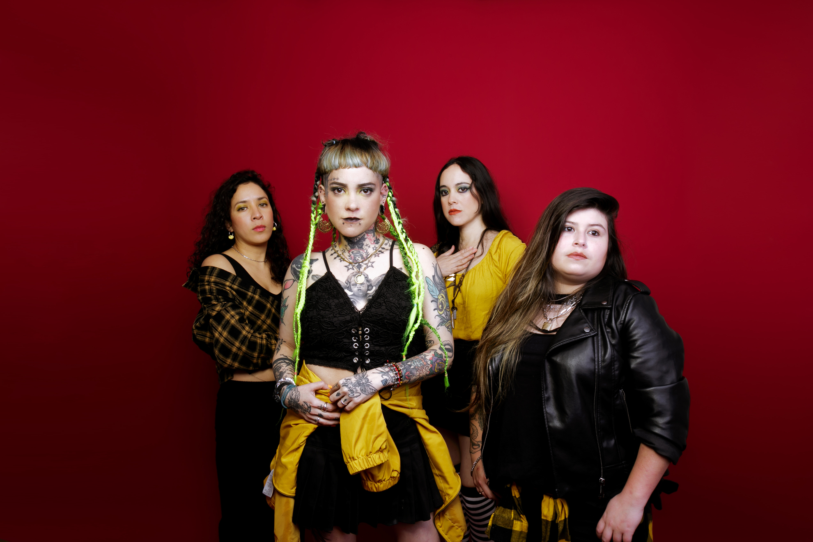
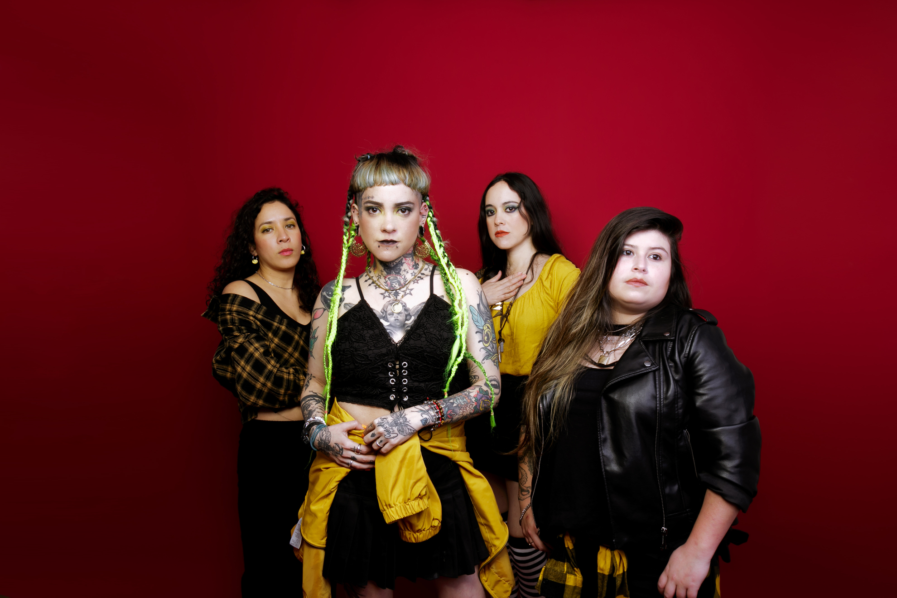

Quiénes somos
Área 7 es una banda peruana de rock pesado procedente de Lima, Perú. Está formada completamente
por
mujeres:
Diana Foronda (voz), Fátima Foronda (guitarra/coros), Katia Villavicencio (guitarra), Ambra
Freyre
(bajo) y Daniela Silva(batería). El nombre deriva del de la banda angelina L7, también
integrada completamente por mujeres.
Biografía
La banda fue creada en 2000, en Lima, iniciando un movimiento de rock 100% femenino en Perú
(aunque, en sus inicios, contaron con un hombre en sus filas y, actualmente, siguen contando con
colaboraciones de
varones puntualmente). La banda nace cuando las hermanas Fátima y Diana Foronda deciden formar
un grupo
que tocara canciones versionadas de bandas como Pearl Jam, Alice in Chains, Nirvana, etc.
Ese mismo año la primera formación Área 7, comienza a tocar en locales de Barranco y Miraflores,
aproximadamente por dos años. En el 2000, estas integrantes deciden tomar otros rumbos, por lo
cual, las
hermanas Foronda comienzan a buscar nuevos integrantes fueran hombres o mujeres. Después de
colocar avisos, se contactaron con Josie Romani (anterior baterista del grupo). La química
surgió de
forma inmediata, Josie contactó a Karol Uriol (guitarrista por naturaleza), la cual decidió
apoyar a la
banda en el bajo y es así como surgen los temas propios, algunas tocadas como banda que recién
se daba a
conocer.
Su primer concierto grande fue en el "5to Desgraciadazo" (5 de julio del 2003), compartiendo
escenario
con Contracorriente, Ni Voz Ni Voto, R3SET, Masacre y 6 voltios, entre otros. Ya para ese año,
la banda
estaba sólida, comienzan los conciertos masivos con bandas como D'Mente Común, Leusemia, etc.
En 2004, en la tercera entrevista en "TVRock", emitido por el Canal Nacional, lanzan su material
discográfico Área 7 EP. Después de varios viajes a provincia y conciertos en Lima, la banda es
llamada
para varios discos compilatorios y el material fotográfico fue incluido en agendas de rock.
En el 2012, llegaría su "primera experiencia internacional", al ser elegidas como banda telonera
de The
Agonist, quienes se embarcarían en el “South American Tour” para llegar a la ciudad de Lima,
donde se
presentaron el día miércoles 25 de julio en “Yield Bar Rock” ubicado en la Plaza San Martín.
En el 2016, Área7 fue conovocada de abrir el concierto a la legendaria banda Guns n' Roses en el
estadio Monumental de Lima, Perú.
 
